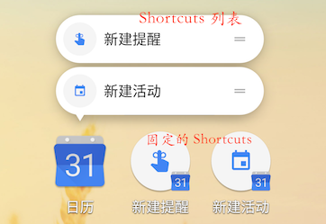

简介
Android 7.1 允许 App 自定义 Shortcuts，类似 iOS 的 3D touch。通过在桌面长按 App 弹出 Shortcut 列表，点击某个 Shortcut 快速进入某项操作，同时 Shortcut 可以拖动到桌面进行固定，如下图系统日历 App：

Shortcuts 作用及分类
Shortcuts 为 App 常用操作提供了快速访问的方式，如上面日历的新建提醒。
这个功能目前可以在Android 7.1系统桌面和部分第三方桌面进行使用，第三方桌面可以通过 API 接入这个功能。
目前支持Shortcut的应用主要还是Google的App，国内有一些比较极客范的app也率先支持了此功能。
类似 BroadcastReceiver 可通过静态和动态方式注册，Shortcuts 也可以通过静态和动态方式添加。
静态Shortcuts
静态 Shortcuts 通过在 Manifest 中声明添加。缺点是不可以修改，只能通过应用升级来添加新的静态 Shortcuts。添加主要分为两步：
AndroidManifest.xml 的 Main Launcher 对应的 Activity 内添加 meta-data
1 | <application |
必须在 Main Launcher 对应的 Activity 内设置，其中 android:resource 指向定义了 shortcuts 的资源文件。
资源文件中定义具体的 shortcuts
res 目录下新建 xml 文件夹，并新建 shortcuts.xml 文件，内容如下：
1 | <shortcutsxmlns:android="http://schemas.android.com/apk/res/android"> |
这里可以添加多个 intent，但点击时不会启动所有 intent，而是启动最后一个 intent，在这个 intent 回退时会启动它前面一个 intent，相当于自动将所有 intent 添加到了堆栈。
intent 可设置属性包括：
android:action 、 android:data 、 android:mimeType 、 android:targetClass 、 android:targetPackage ，其中 android:action 为必须属性。
动态Shortcuts
动态 Shortcuts 通过 ShortcutManager API 进行操作。可以动态添加、修改、删除。
1 | if (Build.VERSION.SDK_INT < Build.VERSION_CODES.N_MR1) { |
通过 ShortcutInfo.Builder 新建 ShortcutInfo，再通过 shortcutManager 添加即可。其他：
(1) setDynamicShortcuts(List) 可以替换并添加所有 shortcut 列表；
(2) addDynamicShortcuts(List) 可以添加新的 shortcut 到列表，超过最大个数会报异常；
(3) updateShortcuts(List) 可以更新一组 shortcuts；
(4) removeDynamicShortcuts(List) 和 removeAllDynamicShortcuts() 可以删除部分或所有 shortcuts。
ShortcutInfo 的属性与 xml 中定义字段含义一致， shortcutId shortcutShortLabel intent 是必须设置的字段，并且 intent 必须设置 Action 。
固定的 Shortcuts
指通过拖动固定到桌面的 Shortcuts，App 不可以添加、修改、删除这些 Shortcuts，只能禁用他们。即便 App 内删除了某个 Shorcut，对应的已固定到桌面的 Shortcuts 也不会被删除。
可以通过：
(1) getPinnedShortcuts() 得到所有固定的 Shortcuts 的信息。
(2) disableShortcuts(List) 或 disableShortcuts(List, CharSequence) 禁用动态的 Shortcuts。
对于静态的 Shortcuts 需要在资源文件中设置 android:enabled=”false” 进行禁用，不过没有必要，静态 Shortcuts 可直接通过删除达到禁用的效果
静态 Shortcuts 和动态 Shortcuts 是有最大个数限制的，默认为 5，超过最大个数后添加会报异常。而固定的 Shortcuts 并没有个数限制，并且固定的 Shortcut 对应的 Shortcut 即便被动态删除了，依然可以通过 id 进行 Update 操作。
动态 Shortcuts 与静态 Shortcuts 区别
(1) 静态 Shortcuts 只能通过升级应用修改，动态 Shortcuts 随时可以修改；
(2) 静态 Shortcuts 的 Intent 无法设置 Flag，默认为 FLAG_ACTIVITY_NEW_TASK 和 FLAG_ACTIVITY_CLEAR_TASK Flag，即若应用运行中会清除所有已存在的 Activity。动态 Shortcuts 的 Intent 可以设置 Flag；
(3) 静态 Shortcuts 的 rank 系统默认根据声明顺序设置，动态 Shortcuts 的 rank 可以通过 setRank(int rank) 接口主动设置，rank 不能小于 0，值越大表示在 shortcut 列表展示时离 App Icon 越远。静态 Shortcuts 默认比动态 Shortcuts 离 App Icon 更近。
(4) 静态 Shortcuts 删除可以直接删除，动态 Shortcuts 建议通过禁用删除；